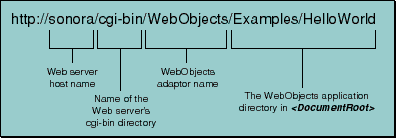
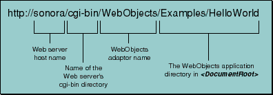
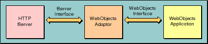
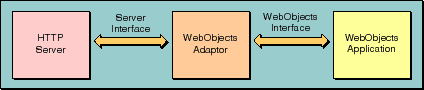

 Figure 6. URL to Access a WebObjects Application When the named server receives the request, it passes the request to the WebObjects adaptor identified in the URL. The adaptor takes the request from the server, repackages it in a standard format, and forwards it to the appropriate WebObjects application (see Figure 7).

Figure 6. URL to Access a WebObjects Application
 Figure 7. The Role of a WebObjects Adaptor All WebObjects adaptors communicate with WebObjects applications in the same way, but they communicate with HTTP servers using whatever interface is provided by a particular server. For example, the WebObjects CGI adaptor uses the Common Gateway Interface, while the Netscape Interface adaptor uses the Netscape Server API (NSAPI). This allows WebObjects adaptors to take advantage of server-specific interfaces but still provide server independence. By default, WebObjects uses the WebObjects CGI adaptor. The Common Gateway Interface is supported by all HTTP servers, so you can use the CGI adaptor with any server. As demands on performance increase, you can switch to another adaptor with a server that supports the corresponding API (Netscape Server API, Internet Server API, or Apache API). Such servers are capable of dynamically loading the adaptor and eliminating the overhead of starting a new process for each request.

Figure 7. The Role of a WebObjects Adaptor
Table of Contents Next Section
 Table of Contents
Table of Contents  Next Section
Table of Contents
Next Section
Table of Contents  Previous Section
Table of Contents Next Section
Previous Section
Table of Contents Next Section